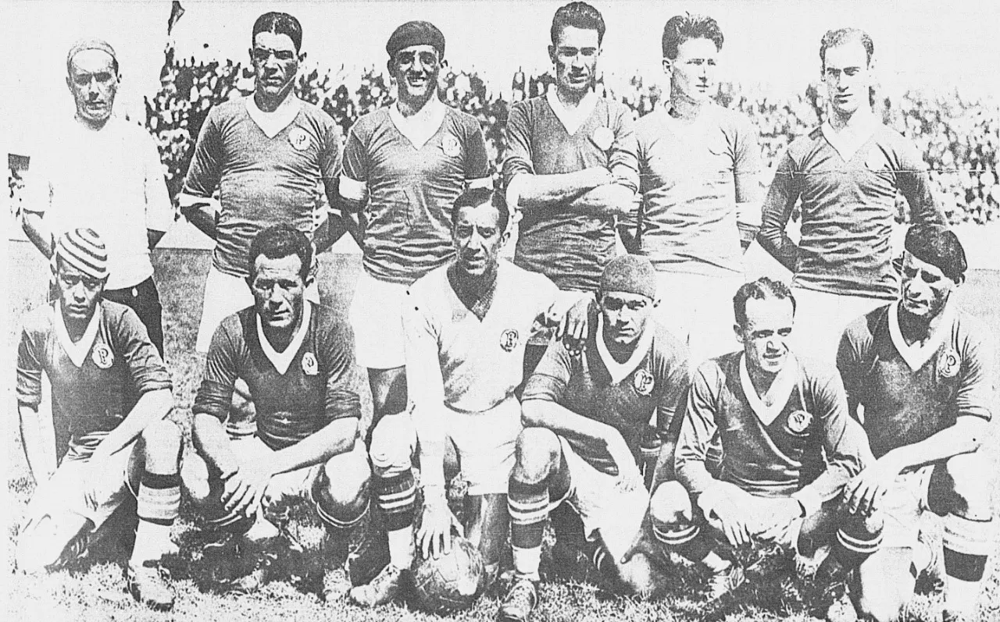
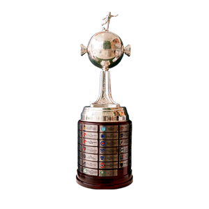
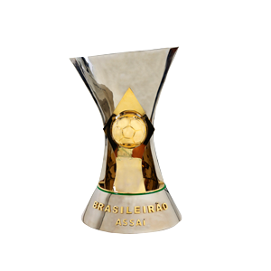
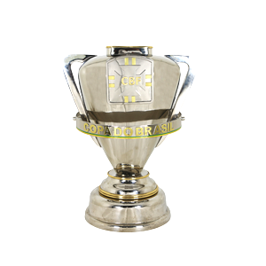
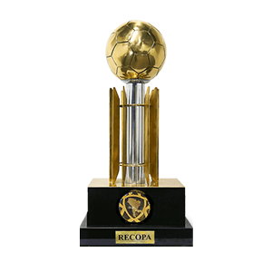
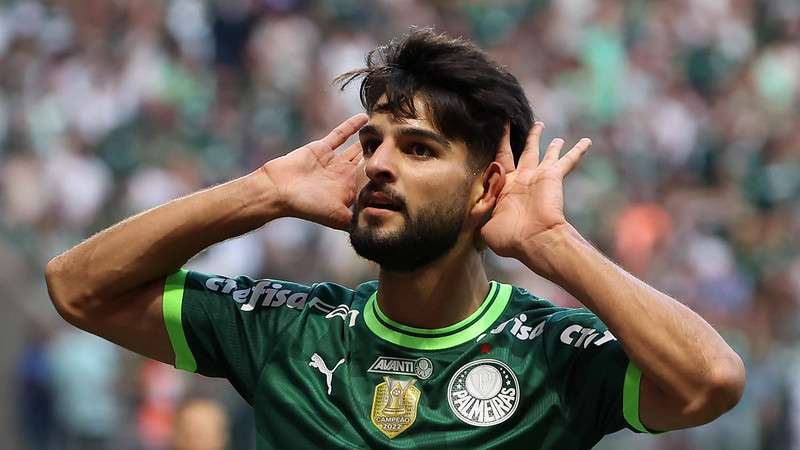
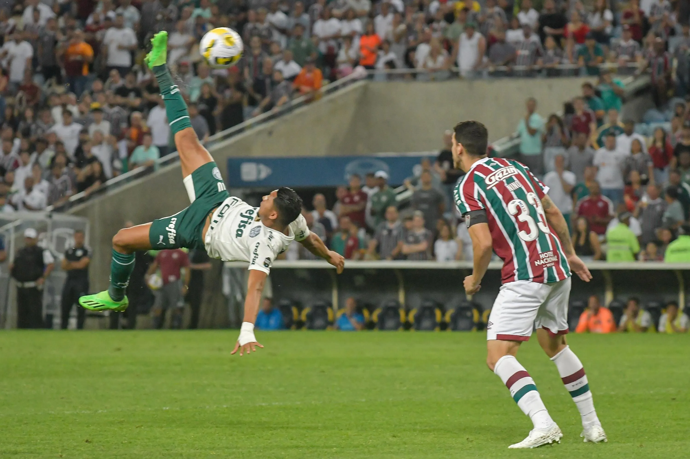
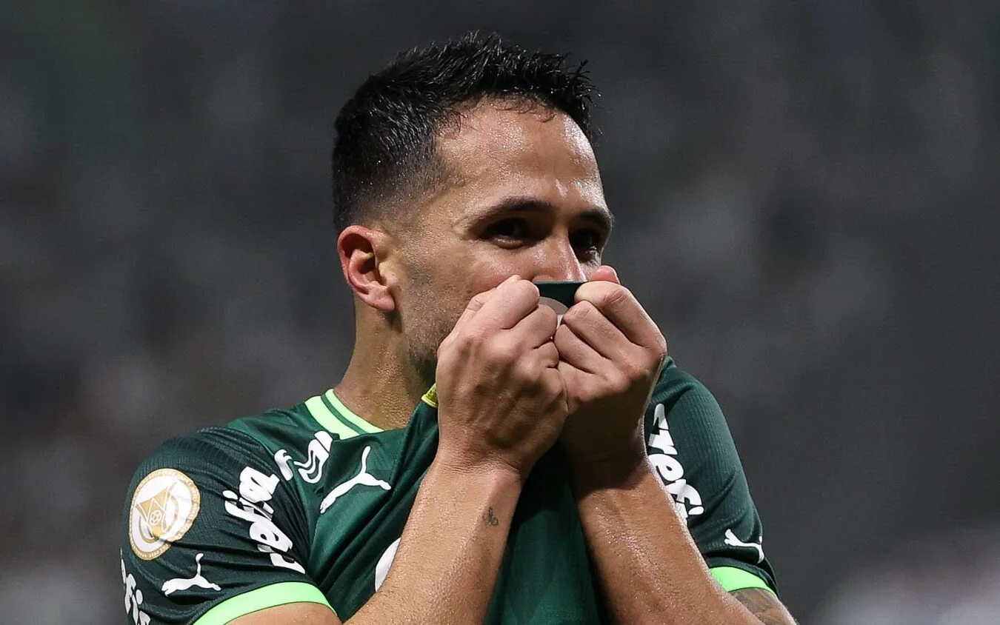

Blog da Sociedade Esportiva Palmeiras
O clube de futebol Palmeiras foi inicialmente fundado em 1914 por imigrantes Italianos, seu nome era Palestra Itália, seu principal rival é o Sport Clube Corinthians Paulista, seu estádio o antigo Palestra Itália foi fundado em 1929. O Palmeiras possui conquistas estaduais, nacionais e internacionais, como as Libertadores de 1999, 2020 e 2021. Entre os ídolos do Palmeiras, podemos citar os pentacampeões Cafu e Marcos. |  |
|---|
| Libertadores  | Brasileirao  | Copa do Brasil  | Paulistão | Supercopa do Brasil | Recopa Sul-Americana  |
1999 2020 2021 | 1960 1967 1967 1969 1972 1973 1993 1994 2016 2018 2022 2023 | 1998 2012 2015 2020 | 1920 1926 1926 1927 1932 1933 1934 1936 1938 1940 1942 1944 1947 1950 1959 1963 1966 1972 1974 1976 1993 1994 1996 2008 2020 2022 2023 | 2023 | 2022 |
|---|
Notícias do Verdão, Tópicos e Discussões
| Notícias | Tópicos | Discussões |  Leila teme não ter Allianz em possível semifinal do Palmeiras |  Flaco Lopez merece a titularidade? 100 Gols de Raphael Veiga, meia atacante é ídolo do verdão? |  Rony, atacante vem de mal desempenho nos últimos meses, dariam outra chance?  Luan, zagueiro é ruim ou apenas azarado? |
|---|